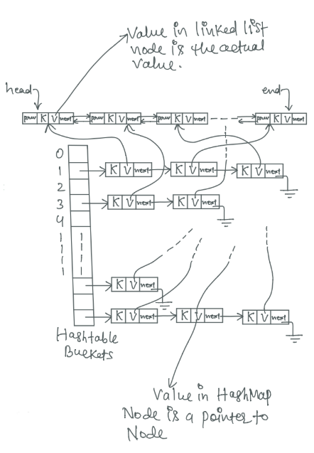

Author: Narendra Jha | Published on: Dec 29, 2019
Prerequisite: LinkedList and Hashtable
Problem statement:
Design and implement a data structure for least recently used (LRU) cache. It should support following operations:
Both operations (put and get) should take constant average time.
Looking at the requirement what we basically need is a Hashtable, using which we can perform both get() and put operations in Θ(1) time. But we also need something more than that.
Everytime we add a new entry into LRUCache, we need to check if it has reached it's maximum capacity or not. If it has reached it's maximum capacity, then we have to remove least recently used item from the hashtable. To find least recently used item, we will have to maintain insertion order as well as access order of elements in LRUCache (hashtable). That means, everytime we add a new entry, we have to maintain insertion order, and everytime we fetch data, we have to update order of elements.
Hashtable does not mantain any kind of ordering of elements, so we will use a doubly linked list to mantain order of elements.
We can not use dynamic array instead of LinkedList, as removing an element in dynamic array takes O(n) time (as it has to shift elements after the target element, one position towards left).
So the LRUCache that we are going to implement, is a Hashtable of keys and doubly linked list nodes as values. The Hashtable makes the time complexities of get() and put() operations Θ(1), and linked list helps in maintaining order of elements and evicting when capacity exceeds.
I am going to implement this in Java. As you must know, Java has a built-in Hashtable (HashMap) implementation, so lets use that. As for linked list, we will maintain our own custom linked list. Linked list Node can be defined as below:
class Node {
K key;
V value;
Node next;
Node prev;
public Node(K key, V value) {
this.key = key;
this.value = value;
}
}
And below is the complete Java implementation of LRUCache
package advance_ds.lru_cache;
import java.util.HashMap;
import java.util.Map;
/**
* Implementation of Least Recently Used (LRU) Cache data structure
*
* We use a Hashtable (built in Java HashMap) and a Doubly Linked
* List (our own customized linked list) to implement LRUCache.
* The LRUCache is a Hashtable of keys and doubly linked list nodes.
* The Hashtable makes the time of get() and put() operation O(1),
* and doubly linked list helps us in maintaining order of elements
* and evicting entry when capacity exceeds.
*
* @author Narendra Jha
*
*/
public class LRUCache<K, V> {
private class Node {
K key;
V value;
Node next;
Node prev;
public Node(K key, V value) {
this.key = key;
this.value = value;
}
}
private int capacity; // capacity of LRUCache
private Node head; // head of linked list
private Node end; // end of linked list
Map<K, Node> map = new HashMap<K, Node>();
public LRUCache(int capacity) {
this.capacity = capacity;
}
// Returns value for a given key in LRUCache
public V get(K key) {
if (map.containsKey(key)) {
Node node = map.get(key);
// Mark the entry as most recently used entry
remove(node); // Remove node from linked list
addFirst(node); // Then add it to the Head of the linked list
return node.value;
}
return null;
}
// Adds a new key-value pair into LRUCache
public void put(K key, V value) {
if (map.containsKey(key)) {
Node node = map.get(key);
node.value = value; // update value
// Mark the entry as most recently used entry
remove(node); // Remove node from linked list
addFirst(node); // Then add it to the Head of the linked list
}
else {
Node node = new Node(key, value);
if (map.size() >= capacity) {
// remove least recently used entry when capacity exceeds
// remove from map first
// as after removing from linked list 'end' will change
map.remove(end.key);
remove(end);
}
addFirst(node);
map.put(key, node);
}
}
// Adds given node at the beginning of the linked list
private void addFirst(Node node) {
node.next = head;
node.prev = null; // not necessary
if (head != null)
head.prev = node;
head = node;
if (end == null)
end = head;
}
// Removes given node from the linked list
private void remove(Node node) {
if (node.prev != null)
node.prev.next = node.next;
else
head = node.next;
if (node.next != null)
node.next.prev = node.prev;
else
end = node.prev;
node.next = null; // not necessary
node.prev = null; // not necessary
}
public static void main(String[] args) {
LRUCache<String, Integer> cache = new LRUCache<>(5);
cache.put("abc", 1);
cache.put("def", 2);
cache.put("ghi", 3);
cache.put("jkl", 4);
cache.put("mno", 5);
// abc is currently least recently used item
System.out.println(cache.get("abc")); // 1
// abc now became most recently used item, and
// def became least recently used item
cache.put("pqr", 6); // removes entry corresponding to def
// and adds entry for pqr
System.out.println(cache.get("def")); // null
System.out.println(cache.get("pqr")); // 6
cache.put("stu", 7); // removes entry corresponding to ghi
// and adds entry for stu
cache.put("vwx", 8); // removes entry corresponding to jkl
// and adds entry for vwx
System.out.println(cache.get("ghi")); // null
System.out.println(cache.get("stu")); // 7
System.out.println(cache.get("jkl")); // null
System.out.println(cache.get("vwx")); // 8
}
}
In above implementation, we use a doubly linked list to maintain the order of elements. Everytime a new entry is added to the hashtable, we also add it to the beginning of the linked list, marking that entry as the most recently used entry, and everytime an item is accessed, we remove corresponding entry form linked list, and add it back to the beginning of the linked list, again marking it as the most recently used element. Doing this the least recently used item is always at the end of the linked list, and therefore while inserting a new element, if capacity surpasses, we remove last element from linked list and corresponding entry from HashMap.
Figure below shows how data in LRUCache is actually stored

Implementation Using LinkedHashMap:
LinkedHashMap implementation in Java is a HashMap which also preserves insertion order of elements. It is basically a hybrid of HashMap and LinkedList. So instead of using HashMap and LinkedList separately, we can use LinkedHashMap from Java library, but there are some issues.
There are mainly two issues which needs to be addressed to implement LRUCache using LinkedHashMap:
public LinkedHashMap(int initialCapacity, float loadFactor, boolean acessOrder) { ... }
All we have to do is use above constructor, and pass true for acessOrder value, and elements in LinkedHashMap will be maintained in access order.
protected boolean removeEldestEntry(Map.Entry<K, V> eldest);
Again, all we have to do is override and implement this method to return true when we want to remove eldest entry and false when not.
below is Java implementation of LRUCache using LinkedHashMap.
package advance_ds.lru_cache;
import java.util.LinkedHashMap;
import java.util.Map;
/**
* Implementation of Least Recently Used (LRU) Cache data structure
*
* Second approach:
* We use Java's built in LinkedHashMap to implement LRUCache
*
* @author Narendra Jha
*
*/
public class LRUCache<K, V> extends LinkedHashMap<K, V> {
private int capacity; // capacity of LRUCache
public LRUCache(int capacity) {
super(16, 0.75f, true); // LinkedHashMap with accessOrder
this.capacity = capacity;
}
@Override
protected boolean removeEldestEntry(Map.Entry<K, V> eldestEntry) {
return size() > capacity;
}
public static void main(String[] args) {
LRUCache<String, Integer> cache = new LRUCache<>(5);
cache.put("abc", 1);
cache.put("def", 2);
cache.put("ghi", 3);
cache.put("jkl", 4);
cache.put("mno", 5);
// abc is currently least recently used item
System.out.println(cache.get("abc")); // 1
// abc now became most recently used item, and
// def became least recently used item
cache.put("pqr", 6); // removes entry corresponding to def
// and adds entry for pqr
System.out.println(cache.get("def")); // null
System.out.println(cache.get("pqr")); // 6
cache.put("stu", 7); // removes entry corresponding to ghi
// and adds entry for stu
cache.put("vwx", 8); // removes entry corresponding to jkl
// and adds entry for vwx
System.out.println(cache.get("ghi")); // null
System.out.println(cache.get("stu")); // 7
System.out.println(cache.get("jkl")); // null
System.out.println(cache.get("vwx")); // 8
}
}
You can also find above implementations and solutions to many other problems on my github repository
PS: Do not use second implementation in an interview, because if an interviewer has asked you this problem, they are most likely expecting you to implement it using the first approach. Once you have implemented it using first approach, then you can quickly talk about second method.
Have a question or comment about this post? write me at njha.sde@gmail.com